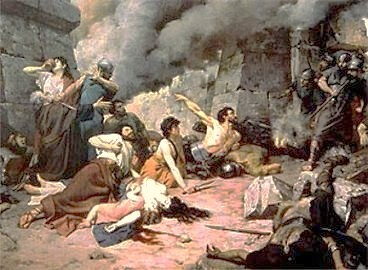
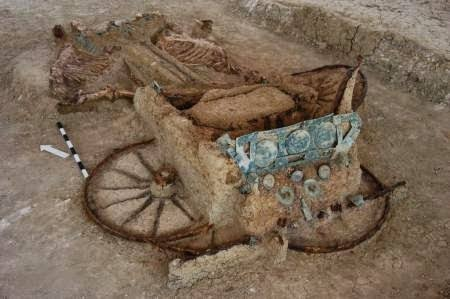

Mitos
Monte Medulio



Ficha rápida
- Lugar: Monte Medulio (localización descoñecida).
- Lenda: Os galaicos, cercados polas lexións romanas, preferiron morrer antes que vivir como escravos.
- Símbolo: Da súa historia naceu o lema "Denantes mortos que escravos", convertido nun dos grandes símbolos da resistencia galega.
O mito en si
"Denantes mortos que escravos".
Levo escoitando esa frase desde que era pequena, pero durante moitos anos non souben realmente de onde viña. Recordo que, sendo adolescente, un día púxenme a buscar a súa orixe por simple curiosidade. Sen decatarme, estaba descubrindo a que probablemente foi a primeira lenda galega que investiguei pola miña conta: a do Monte Medulio.
A lenda conta que durante a conquista romana de Galicia, un grupo de galaicos quedou cercado polas lexións romanas nun monte. Os romanos rodeáranos cun enorme foso e xa non había maneira de escapar. Foi entón cando tomaron unha decisión que acabaría converténdose nun dos episodios máis coñecidos da nosa historia.
En lugar de renderse e vivir como escravos, decidiron morrer libres. Uns beberon veleno de teixo, outros botáronse ao lume e outros atravesáronse coa súa propia espada. Dise que preferiron a morte antes ca perder a liberdade, e desa historia naceu un lema que chegou ata hoxe: "Denantes mortos que escravos".
Estamos tan afeitos a que as historias rematen cunha solución de última hora ou cun heroe que cambia o destino, e nesta lenda non pasa. Sabes desde o principio que non hai escapatoria.
Outra cousa que me parece curiosa é que nin sequera sabemos con certeza onde estaba o Monte Medulio. Hai quen o sitúa en Santa Trega, outros no Caurel e tamén existen outras teorías. O lugar segue sendo un misterio, pero a historia sobreviviu durante máis de dous mil anos.
Co paso do tempo, o Monte Medulio converteuse nun símbolo da resistencia galega. Tanto é así que Castelao recuperou o lema "Denantes mortos que escravos" para o escudo que deseñou para Galicia.
Agora, cada vez que escoito esa frase, xa non penso só nun lema. Acórdome da adolescente que un día decidiu buscar de onde viña e acabou pasando horas lendo sobre o Monte Medulio. Mirando atrás, creo que foi nese momento cando empezou a miña curiosidade por descubrir as lendas e mitos de Galicia. E quen me ía dicir daquela que, uns anos despois, acabaría escribindo un blog para contalas.
Bibliografía
Amil, I. F. (2025, 16 marzo). Monte Medulio: la batalla en la que miles de gallegos prefirieron la muerte antes que ser esclavos de Roma. El Español.
https://www.elespanol.com/quincemil/cultura/historias-de-la-historia/20250316/monte-medulio-batalla-miles-gallegos-prefirieron-muerte-esclavos-roma/931157415_0.html
De Antonio Ceniza, V. T. L. E. (2020, 11 agosto). El Monte Medulio: Historia y leyenda. Misterios y Leyendas de Galicia y Asturias.
https://misteriosleyendasdegaliciayasturias.wordpress.com/2018/04/18/el-monte-medulio-historia-y-leyenda/